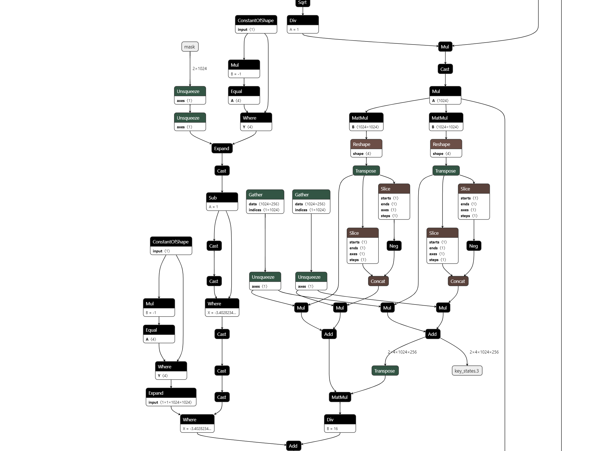

Note
Go to the end to download the full example code.
Export a LLAMA model into ONNX¶
This script does not export a full llama model but a shorter one to be able to fast iterate on improvments. See LlamaConfig. The model is then converted into ONNX. It can be seen with Netron which can be also used through a VS Code Extension.
The model¶
import os
import random
def ids_tensor(shape, vocab_size, rng=None, name=None):
# Creates a random int32 tensor of the shape within the vocab size
import torch
if rng is None:
rng = random.Random()
total_dims = 1
for dim in shape:
total_dims *= dim
values = []
for _ in range(total_dims):
values.append(rng.randint(0, vocab_size - 1))
return torch.tensor(data=values, dtype=torch.long).view(shape).contiguous()
def get_llama_model(
input_dims=[(2, 1024)], # noqa: B006
hidden_size=1024, # 4096,
num_hidden_layers=1,
vocab_size=32000,
intermediate_size=11008,
max_position_embeddings=2048,
num_attention_heads=4, # 32,
_attn_implementation="eager",
with_mask: bool = True,
):
import torch
from transformers import LlamaConfig
from transformers.models.llama.modeling_llama import LlamaModel
config = LlamaConfig(
num_hidden_layers=num_hidden_layers,
vocab_size=vocab_size,
hidden_size=hidden_size,
intermediate_size=intermediate_size,
max_position_embeddings=max_position_embeddings,
num_attention_heads=num_attention_heads,
)
if _attn_implementation:
config._attn_implementation = _attn_implementation
class LlamaModelWrapper(torch.nn.Module):
def __init__(self, config):
super().__init__()
self.model = LlamaModel(config)
def forward(self, input_ids, attention_mask):
model_output = self.model(input_ids, attention_mask=attention_mask)
return model_output.to_tuple()
def generate_example_inputs(batch: int, seq: int, vocab_size: int):
input_ids = ids_tensor([batch, seq], vocab_size)
input_mask = torch.tril(torch.ones(batch, seq, dtype=torch.float32))
assert input_mask.dtype == torch.float32
return input_ids, input_mask
example_args_collection = []
for b, s in input_dims:
example_args_collection.append(generate_example_inputs(b, s, vocab_size))
return LlamaModelWrapper(config), example_args_collection
print("creation of the model.")
model, example_args_collection = get_llama_model()
print("done.")
creation of the model.
~/vv/this312/lib/python3.12/site-packages/torch/compiler/__init__.py:148: FutureWarning: torch._dynamo.allow_in_graph is deprecated and will be removed in a future version. Use torch._dynamo.nonstrict_trace instead.
return torch._dynamo.allow_in_graph(fn)
done.
The conversion to ONNX¶
def export(model, args, filename, dynamic_shapes):
from experimental_experiment.torch_interpreter import to_onnx, ExportOptions
from onnx_diagnostic.torch_export_patches import bypass_export_some_errors
with bypass_export_some_errors(patch_transformers=True):
to_onnx(
model,
args,
filename=filename,
target_opset=18,
dynamic_shapes=dynamic_shapes,
export_options=ExportOptions(strict=False),
)
filename = "dump_llama.onnx"
print(f"conversion to ONNX in file {filename!r}")
export(
model,
example_args_collection[0],
filename,
dynamic_shapes=({0: "batch", 1: "seq_length"}, {0: "batch", 1: "seq_length"}),
)
print("done.")
print(f"model size {os.stat(filename).st_size / 2**20} Mb.")
Traceback (most recent call last):
File "~/github/teachcompute/_doc/examples/plot_export_model_onnx.py", line 115, in <module>
export(
File "~/github/teachcompute/_doc/examples/plot_export_model_onnx.py", line 103, in export
to_onnx(
File "~/github/experimental-experiment/experimental_experiment/torch_interpreter/onnx_export.py", line 1035, in to_onnx
graph_module, builder, interpreter, mask_outputs = _make_builder_interpreter(
^^^^^^^^^^^^^^^^^^^^^^^^^^
File "~/github/experimental-experiment/experimental_experiment/torch_interpreter/onnx_export.py", line 593, in _make_builder_interpreter
exported_program = export_options.export(
^^^^^^^^^^^^^^^^^^^^^^
File "~/github/experimental-experiment/experimental_experiment/torch_interpreter/export_options.py", line 708, in export
exported_program = self._export(
^^^^^^^^^^^^^
File "~/github/experimental-experiment/experimental_experiment/torch_interpreter/export_options.py", line 343, in _export
return torch_export(
^^^^^^^^^^^^^
File "~/github/experimental-experiment/experimental_experiment/export_helpers.py", line 146, in torch_export
return torch.export.export(
^^^^^^^^^^^^^^^^^^^^
File "~/vv/this312/lib/python3.12/site-packages/torch/export/__init__.py", line 205, in export
raise e
File "~/vv/this312/lib/python3.12/site-packages/torch/export/__init__.py", line 171, in export
return _export(
^^^^^^^^
File "~/vv/this312/lib/python3.12/site-packages/torch/export/_trace.py", line 1344, in wrapper
raise e
File "~/vv/this312/lib/python3.12/site-packages/torch/export/_trace.py", line 1310, in wrapper
ep = fn(*args, **kwargs)
^^^^^^^^^^^^^^^^^^^
File "~/vv/this312/lib/python3.12/site-packages/torch/export/exported_program.py", line 124, in wrapper
return fn(*args, **kwargs)
^^^^^^^^^^^^^^^^^^^
File "~/vv/this312/lib/python3.12/site-packages/torch/_utils_internal.py", line 96, in wrapper_function
return function(*args, **kwargs)
^^^^^^^^^^^^^^^^^^^^^^^^^
File "~/vv/this312/lib/python3.12/site-packages/torch/export/_trace.py", line 2512, in _export
ep = _export_for_training(
^^^^^^^^^^^^^^^^^^^^^
File "~/vv/this312/lib/python3.12/site-packages/torch/export/_trace.py", line 1344, in wrapper
raise e
File "~/vv/this312/lib/python3.12/site-packages/torch/export/_trace.py", line 1310, in wrapper
ep = fn(*args, **kwargs)
^^^^^^^^^^^^^^^^^^^
File "~/vv/this312/lib/python3.12/site-packages/torch/export/exported_program.py", line 124, in wrapper
return fn(*args, **kwargs)
^^^^^^^^^^^^^^^^^^^
File "~/vv/this312/lib/python3.12/site-packages/torch/export/_trace.py", line 2300, in _export_for_training
export_artifact = export_func(
^^^^^^^^^^^^
File "~/vv/this312/lib/python3.12/site-packages/torch/export/_trace.py", line 2229, in _non_strict_export
aten_export_artifact = _to_aten_func(
^^^^^^^^^^^^^^
File "~/vv/this312/lib/python3.12/site-packages/torch/export/_trace.py", line 2006, in _export_to_aten_ir_make_fx
gm, graph_signature = transform(_make_fx_helper)(
^^^^^^^^^^^^^^^^^^^^^^^^^^^
File "~/vv/this312/lib/python3.12/site-packages/torch/export/_trace.py", line 2136, in _aot_export_non_strict
gm, sig = aot_export(stack, wrapped_mod, args, kwargs=kwargs, **flags)
^^^^^^^^^^^^^^^^^^^^^^^^^^^^^^^^^^^^^^^^^^^^^^^^^^^^^^^^^^^^
File "~/vv/this312/lib/python3.12/site-packages/torch/export/_trace.py", line 1914, in _make_fx_helper
gm = make_fx(
^^^^^^^^
File "~/vv/this312/lib/python3.12/site-packages/torch/fx/experimental/proxy_tensor.py", line 2856, in wrapped
return make_fx_tracer.trace(f, *args)
^^^^^^^^^^^^^^^^^^^^^^^^^^^^^^
File "~/vv/this312/lib/python3.12/site-packages/torch/fx/experimental/proxy_tensor.py", line 2757, in trace
return self._trace_inner(f, *args)
^^^^^^^^^^^^^^^^^^^^^^^^^^^
File "~/vv/this312/lib/python3.12/site-packages/torch/fx/experimental/proxy_tensor.py", line 2718, in _trace_inner
t = dispatch_trace(
^^^^^^^^^^^^^^^
File "~/vv/this312/lib/python3.12/site-packages/torch/_compile.py", line 54, in inner
return disable_fn(*args, **kwargs)
^^^^^^^^^^^^^^^^^^^^^^^^^^^
File "~/vv/this312/lib/python3.12/site-packages/torch/_dynamo/eval_frame.py", line 1271, in _fn
return fn(*args, **kwargs)
^^^^^^^^^^^^^^^^^^^
File "~/vv/this312/lib/python3.12/site-packages/torch/fx/experimental/proxy_tensor.py", line 1554, in dispatch_trace
graph = tracer.trace(root, concrete_args) # type: ignore[arg-type]
^^^^^^^^^^^^^^^^^^^^^^^^^^^^^^^^^
File "~/vv/this312/lib/python3.12/site-packages/torch/fx/experimental/proxy_tensor.py", line 2290, in trace
res = super().trace(root, concrete_args)
^^^^^^^^^^^^^^^^^^^^^^^^^^^^^^^^^^
File "~/vv/this312/lib/python3.12/site-packages/torch/fx/_symbolic_trace.py", line 890, in trace
(self.create_arg(fn(*args)),),
^^^^^^^^^
File "~/vv/this312/lib/python3.12/site-packages/torch/fx/experimental/proxy_tensor.py", line 1624, in wrapped
out = f(*tensors) # type:ignore[call-arg]
^^^^^^^^^^^
File "<string>", line 1, in <lambda>
File "~/vv/this312/lib/python3.12/site-packages/torch/export/_trace.py", line 1798, in wrapped_fn
return tuple(flat_fn(*args))
^^^^^^^^^^^^^^
File "~/vv/this312/lib/python3.12/site-packages/torch/_functorch/_aot_autograd/utils.py", line 192, in flat_fn
tree_out = fn(*args, **kwargs)
^^^^^^^^^^^^^^^^^^^
File "~/vv/this312/lib/python3.12/site-packages/torch/_functorch/_aot_autograd/graph_capture_wrappers.py", line 1520, in functional_call
out = mod(*args[params_len:], **kwargs)
^^^^^^^^^^^^^^^^^^^^^^^^^^^^^^^^^
File "~/vv/this312/lib/python3.12/site-packages/torch/fx/_symbolic_trace.py", line 864, in module_call_wrapper
return self.call_module(mod, forward, args, kwargs)
^^^^^^^^^^^^^^^^^^^^^^^^^^^^^^^^^^^^^^^^^^^^
File "~/vv/this312/lib/python3.12/site-packages/torch/fx/experimental/proxy_tensor.py", line 2379, in call_module
return Tracer.call_module(self, m, forward, args, kwargs)
^^^^^^^^^^^^^^^^^^^^^^^^^^^^^^^^^^^^^^^^^^^^^^^^^^
File "~/vv/this312/lib/python3.12/site-packages/torch/fx/_symbolic_trace.py", line 572, in call_module
ret_val = forward(*args, **kwargs)
^^^^^^^^^^^^^^^^^^^^^^^^
File "~/vv/this312/lib/python3.12/site-packages/torch/fx/_symbolic_trace.py", line 857, in forward
return _orig_module_call(mod, *args, **kwargs)
^^^^^^^^^^^^^^^^^^^^^^^^^^^^^^^^^^^^^^^
File "~/vv/this312/lib/python3.12/site-packages/torch/nn/modules/module.py", line 1778, in _wrapped_call_impl
return self._call_impl(*args, **kwargs)
^^^^^^^^^^^^^^^^^^^^^^^^^^^^^^^^
File "~/vv/this312/lib/python3.12/site-packages/torch/nn/modules/module.py", line 1789, in _call_impl
return forward_call(*args, **kwargs)
^^^^^^^^^^^^^^^^^^^^^^^^^^^^^
File "~/vv/this312/lib/python3.12/site-packages/torch/export/_trace.py", line 2120, in forward
tree_out = mod(*args, **kwargs)
^^^^^^^^^^^^^^^^^^^^
File "~/vv/this312/lib/python3.12/site-packages/torch/fx/_symbolic_trace.py", line 864, in module_call_wrapper
return self.call_module(mod, forward, args, kwargs)
^^^^^^^^^^^^^^^^^^^^^^^^^^^^^^^^^^^^^^^^^^^^
File "~/vv/this312/lib/python3.12/site-packages/torch/fx/experimental/proxy_tensor.py", line 2379, in call_module
return Tracer.call_module(self, m, forward, args, kwargs)
^^^^^^^^^^^^^^^^^^^^^^^^^^^^^^^^^^^^^^^^^^^^^^^^^^
File "~/vv/this312/lib/python3.12/site-packages/torch/fx/_symbolic_trace.py", line 572, in call_module
ret_val = forward(*args, **kwargs)
^^^^^^^^^^^^^^^^^^^^^^^^
File "~/vv/this312/lib/python3.12/site-packages/torch/fx/_symbolic_trace.py", line 857, in forward
return _orig_module_call(mod, *args, **kwargs)
^^^^^^^^^^^^^^^^^^^^^^^^^^^^^^^^^^^^^^^
File "~/vv/this312/lib/python3.12/site-packages/torch/nn/modules/module.py", line 1778, in _wrapped_call_impl
return self._call_impl(*args, **kwargs)
^^^^^^^^^^^^^^^^^^^^^^^^^^^^^^^^
File "~/vv/this312/lib/python3.12/site-packages/torch/nn/modules/module.py", line 1789, in _call_impl
return forward_call(*args, **kwargs)
^^^^^^^^^^^^^^^^^^^^^^^^^^^^^
File "~/github/teachcompute/_doc/examples/plot_export_model_onnx.py", line 73, in forward
model_output = self.model(input_ids, attention_mask=attention_mask)
^^^^^^^^^^^^^^^^^^^^^^^^^^^^^^^^^^^^^^^^^^^^^^^^^^^^
File "~/vv/this312/lib/python3.12/site-packages/torch/fx/_symbolic_trace.py", line 864, in module_call_wrapper
return self.call_module(mod, forward, args, kwargs)
^^^^^^^^^^^^^^^^^^^^^^^^^^^^^^^^^^^^^^^^^^^^
File "~/vv/this312/lib/python3.12/site-packages/torch/fx/experimental/proxy_tensor.py", line 2379, in call_module
return Tracer.call_module(self, m, forward, args, kwargs)
^^^^^^^^^^^^^^^^^^^^^^^^^^^^^^^^^^^^^^^^^^^^^^^^^^
File "~/vv/this312/lib/python3.12/site-packages/torch/fx/_symbolic_trace.py", line 572, in call_module
ret_val = forward(*args, **kwargs)
^^^^^^^^^^^^^^^^^^^^^^^^
File "~/vv/this312/lib/python3.12/site-packages/torch/fx/_symbolic_trace.py", line 857, in forward
return _orig_module_call(mod, *args, **kwargs)
^^^^^^^^^^^^^^^^^^^^^^^^^^^^^^^^^^^^^^^
File "~/vv/this312/lib/python3.12/site-packages/torch/nn/modules/module.py", line 1778, in _wrapped_call_impl
return self._call_impl(*args, **kwargs)
^^^^^^^^^^^^^^^^^^^^^^^^^^^^^^^^
File "~/vv/this312/lib/python3.12/site-packages/torch/nn/modules/module.py", line 1789, in _call_impl
return forward_call(*args, **kwargs)
^^^^^^^^^^^^^^^^^^^^^^^^^^^^^
File "~/github/transformers/src/transformers/utils/generic.py", line 952, in wrapper
output = func(self, *args, **kwargs)
^^^^^^^^^^^^^^^^^^^^^^^^^^^
File "~/github/transformers/src/transformers/utils/output_capturing.py", line 248, in wrapper
outputs = func(self, *args, **kwargs)
^^^^^^^^^^^^^^^^^^^^^^^^^^^
File "~/github/transformers/src/transformers/models/llama/modeling_llama.py", line 399, in forward
causal_mask = create_causal_mask(
^^^^^^^^^^^^^^^^^^^
File "~/github/transformers/src/transformers/utils/deprecation.py", line 171, in wrapped_func
return func(*args, **kwargs)
^^^^^^^^^^^^^^^^^^^^^
File "~/github/transformers/src/transformers/masking_utils.py", line 983, in create_causal_mask
causal_mask = mask_interface(
^^^^^^^^^^^^^^^
TypeError: patched_eager_mask() missing 1 required positional argument: 'cache_position'
This gives the following in Netron:

Total running time of the script: (0 minutes 12.821 seconds)